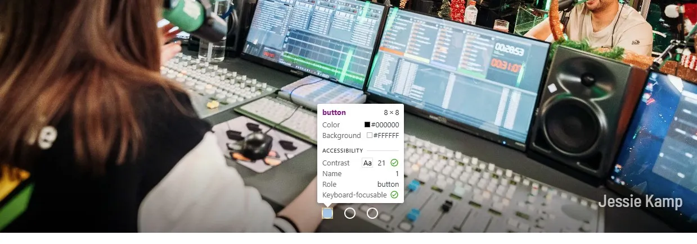
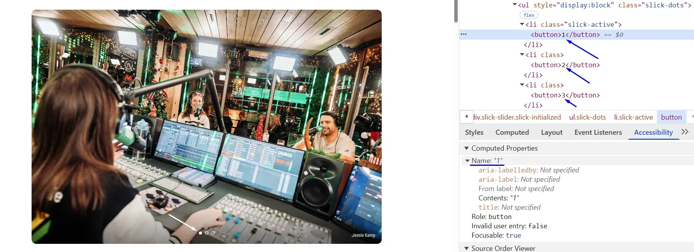
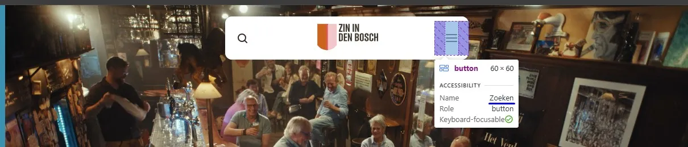
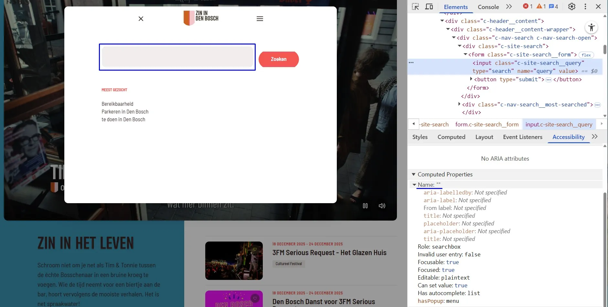
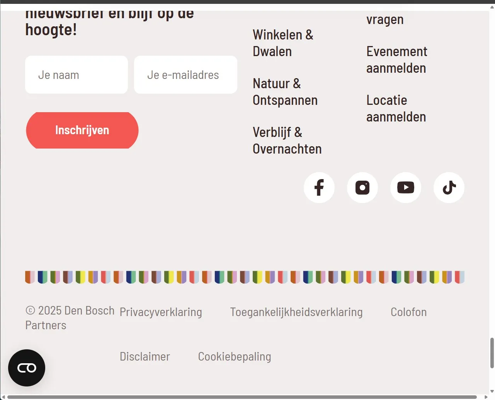
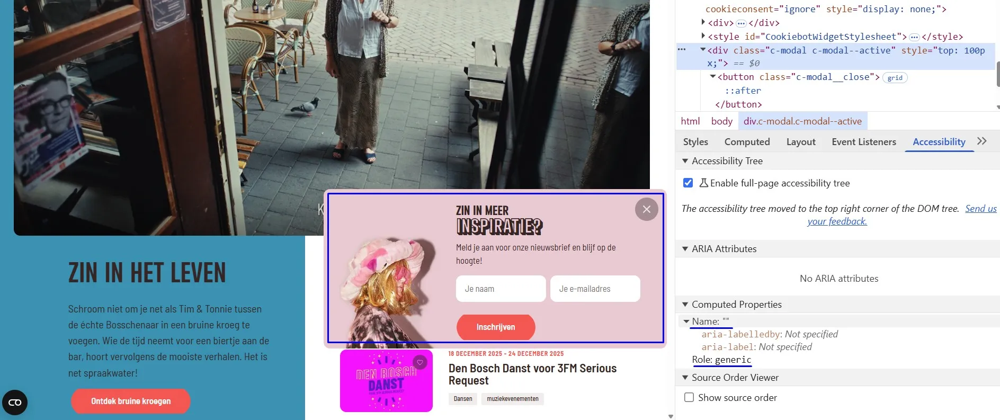
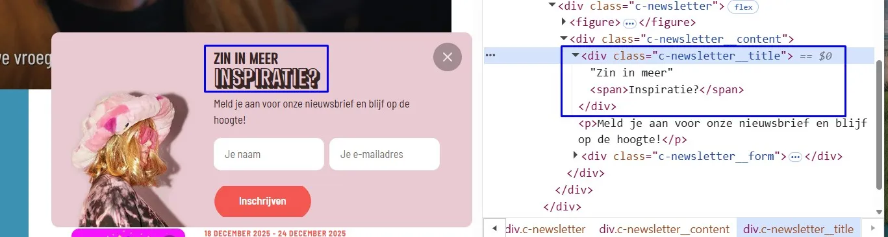
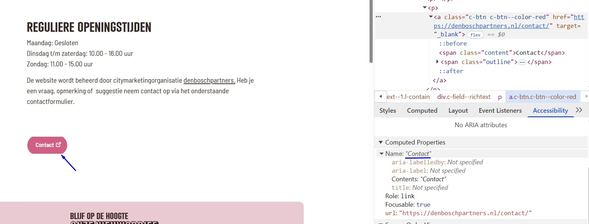
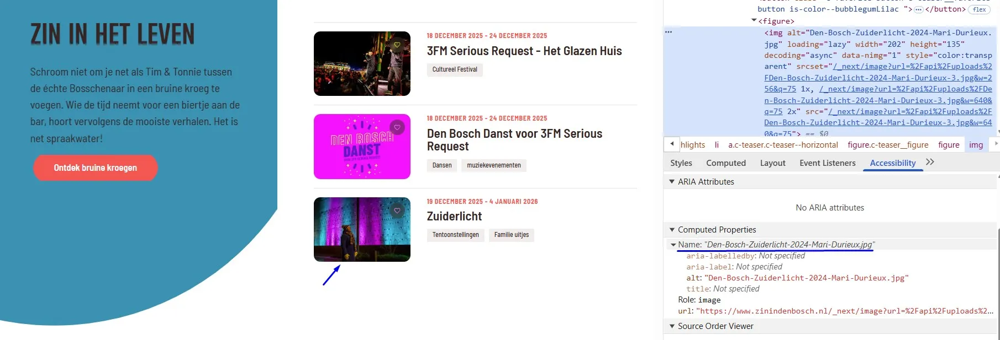
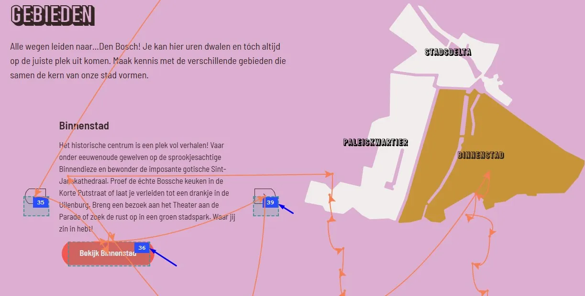

Audit digitale toegankelijkheid van website zinindenbosch.nl/nl
Samenvatting
Wij hebben de website zinindenbosch.nl onderzocht tussen 5 en 17 december 2025. Op dit moment zijn 33 van de 55 succescriteria als voldoende beoordeeld. In dit rapport lees je wat er bij de overige 22 nog fout gaat, en hoe je dat kunt verbeteren.
Op deze pagina staat witte tekst “Meer over 3FM Serious Request”, “Naar de website van Spieren voor Spieren” en “Bekijk Bossche Acties” op een groene achtergrond (#AFDE35). De kleurcontrastverhouding is te laag: 1,6:1.
Oplossing:
Deze tekst is kleiner dan 24px en niet vetgedrukt, daarom moet het contrast minimaal 4,5:1 zijn. Op deze pagina staat een instructie die uitlegt hoe je kleurcontrast kunt testen: https://properaccess.nl/hoe-test-ik-kleurcontrast/.
#2 - Welke knop actief is, is niet vastgelegd in de code
Op deze pagina staat een carrousel met afbeeldingen en knoppen om tussen de afbeeldingen te schakelen. De actieve knop ziet er anders uit dan de knop die niet actief is. Deze informatie ontbreekt in de HTML.
Een bezoeker met een schermlezer heeft daardoor geen toegang tot deze informatie.
Oplossing:
Je kunt dit oplossen met ARIA-technieken of een verborgen tekst.
#3 - Klikgebied van de knoppen bij de carrousel is niet groot genoeg
Impact: MediumType: ТеchniekWCAG: 2.5.8

De carrousel heeft knoppen om tussen afbeeldingen te navigeren. Deze knoppen voldoen niet aan de minimale afmetingseisen voor interactieve elementen. De gecombineerde hoogte, breedte en omringende ruimte van elke knop is minder dan 24 CSS-pixels.
De oppervlakte waarop geklikt kan worden (het ‘doelgebied’) bij knoppen, links en andere interactieve elementen moet groot genoeg zijn. Anders is het voor bezoekers met een motorische beperking lastig om op het goede element te klikken.
Oplossing:
Elementen moeten óf een oppervlakte hebben van minimaal 24 bij 24 CSS-pixels, óf voldoende uit elkaar geplaatst zijn. Om te bepalen of klikbare elementen ver genoeg uit elkaar staan, teken je een denkbeeldige cirkel met een diameter van 24 pixels in het midden van het doelgebied. Deze cirkel mag op geen enkele plek (de cirkel van) een ander doelgebied raken.
#4 - Naam van de knop beschrijft niet goed wat de knop doet
Impact: GrootType: TechniekWCAG: 2.4.6EN: 9.2.4.6

De carrousel heeft knoppen om tussen afbeeldingen te navigeren. Maar de toegankelijke naam is "1", "2", "3", wat de functie niet nauwkeurig beschrijft en niet duidelijk is voor gebruikers met slecht zicht of gebruikers van schermlezers.
Een blinde bezoeker weet daardoor niet wat deze knop precies doet.
Oplossing:
Voeg tekst toe die deze knop goed beschrijft.
#5 - Alternatieve tekst van afbeelding is niet betekenisvol
Impact: MediumType: ContentWCAG: 1.1.1EN: 9.1.1.1
De afbeeldingen in de caroussel zijn voorzien van de alternatieve tekst "f". Deze tekst is ontoereikend om de afbeelding te beschrijven en is niet uniek.
Afbeeldingen die informatie overdragen moeten een betekenisvolle alternatieve tekst hebben, waarin de belangrijke informatie uit de afbeelding wordt beschreven.
Oplossing:
Voeg een beschrijvende alternatieve tekst toe aan het alt-attribuut. Om herhaling te voorkomen mag deze alternatieve tekst niet gelijk zijn aan tekst die al op de pagina staat, bijvoorbeeld als onderschrift van de afbeelding.
#6 - Iframe heeft geen goede beschrijving
Impact: MediumType: ContentWCAG: 2.4.6EN: 9.2.4.6
Op deze pagina staat een video toegevoegd via een iframe. De beschrijving is ‘youtube video’.
Iframes moeten een duidelijke beschrijving hebben meestal via het title-attribuut. Hierin moet staan welk type inhoud het is (bijvoorbeeld een podcast of video) en waar het inhoudelijk over gaat. Deze beschrijving moet uniek en betekenisvol zijn, zodat bezoekers met hulpsoftware kunnen bepalen of ze de inhoud willen verkennen.
Oplossing:
Voeg het title-attribuut toe aan het iframe-element en geef daarin aan welk type inhoud het iframe bevat en waar het over gaat.
Op deze pagina wordt een video getoond. Op het einde komt tekst en een logo in beeld. Deze informatie is niet toegankelijk voor bezoekers die de video niet kunnen zien. Er wordt echter geen media-alternatief of audiodescriptie aangeboden.
Oplossing:
Voor succescriterium 1.2.3 kan dit worden opgelost met een geschreven tekst (media-alternatief). Voor succescriterium 1.2.5 is dat echter niet genoeg. Hiervoor moet een audiobeschrijving worden toegevoegd die de visuele elementen in de video beschrijft, zoals namen, functies, logo’s en teksten.
#8 - Button heeft geen toegankelijke naam
Impact: GrootType: TechniekWCAG: 4.1.2EN: 9.4.1.2
De play-button in de video heeft geen toegankelijke naam. De schermlezer kan niet vertellen wat deze knop doet.
Oplossing:
Gebruik een aria-label om deze knop een naam te geven.
#9 - Alt-tekst is niet uniek en beschrijft de afbeelding niet
Impact: GrootType: TechniekWCAG: 1.1.1EN: 9.1.1.1
Onder het kopje “'T Bonte Palet” staan twee foto’s van het interieur van de cafe. Beide afbeeldingen hebben dezelfde tekst alternatief: “'T Bonte Palet”. Dit is niet informatief. Zie ook andere foto’s op deze pagina.
Oplossing:
Beschrijf de afbeeldingen of laat het alt-attribuut leeg.
#10 - Tekstalternatief van het logo bevat meer tekst
Impact: GrootType: TechniekWCAG: 1.1.1EN: 9.1.1.1
Het logo van de website in de header en de footer heeft tekst “Zin in Den Bosch”. Het tekstalternatief is “zinindenbosch.nl”. Er is een verschil.
Oplossing:
Geef een blinde bezoeker dezelfde informatie als een ziende bezoeker. Verwijder ‘.nl’.
#11 - Focusindicator is verwijderd en daardoor is toetsenbordfocus niet zichtbaar
Impact: GrootType: TechniekWCAG: 2.4.7EN: 9.2.4.7
Op deze website is de standaardfocusstijl voor toetsenbordnavigatie (bij links en invoervelden) op alle pagina's verwijderd. Er zijn echter geen alternatieve, aangepaste focusindicatoren geïmplementeerd.
De toetsenbordfocus moet altijd zichtbaar zijn op interactieve elementen zoals links, knoppen en invoervelden die met het toetsenbord focus kunnen krijgen. Bezoekers die met het toetsenbord navigeren moeten goed kunnen zien op welke plek van de pagina ze zijn. Anders weten ze niet op welk moment ze op Enter moeten drukken om een knop of link te bedienen.
Alle pagina's van de website ontbreekt een skiplink.
Er moet een manier zijn om delen van een pagina over te slaan, zoals het navigatiemenu en andere elementen die op meerdere pagina’s terugkomen. Je gebruikt hier een skiplink voor. Daarmee kun je vaste blokken met herhalende inhoud overslaan. Een skiplink moet de eerste link op de pagina zijn. Deze link mag verborgen zijn, maar moet zichtbaar worden zodra hij focus krijgt.
Oplossing:
Voeg een skiplink toe waarmee bezoekers herhalende delen van de pagina over kunnen slaan.
Zorg dat de skiplink:
de eerste link op de pagina is;
visueel verborgen is, maar zichtbaar wordt bij toetsenbordfocus;
naar de hoofdcontent van de pagina springt als de bezoeker de link activeert.
#13 - Onvoldoende kleurcontrast bij tekst die kleiner is dan 19px
Op pagina https://www.zinindenbosch.nl/nl staan rode (#ff544d) teksten "18 december 2025 - 24 december 2025", "19 december 2025 - 4 januari 2026" en "Artikelen" op een witte achtergrond. De kleurcontrastverhouding is te laag: 3,2:1.
Zie ook hetzelfde probleem met deze kleur:
Op pagina https://www.zinindenbosch.nl/nl staat witte tekst “Ontdek bruine kroegen”, “Bekijk Binnenstad”, “Bereikbaarheid” en andere op een rode (#ff544d) achtergrond. De kleurcontrastverhouding is te laag: 3,2:1.
Op pagina https://www.zinindenbosch.nl/nl staat rode tekst (#ff544d) met de tekst 'Artikelen' op een groene achtergrond (#b4ddde). De kleurcontrastverhouding is te laag: 2,2:1.
Op pagina https://www.zinindenbosch.nl/nl staat rode tekst (#ff544d) met de tekst 'Artikelen' op een gele achtergrond (#c98d00). De kleurcontrastverhouding is te laag: 1,1:1.
Zie ook andere combinaties met deze kleur op andere pagina's.
Oplossing:
Deze tekst is kleiner dan 19px, daarom moet het contrast met de achtergrondkleur minimaal 4,5:1 zijn. Op deze pagina staat een instructie die uitlegt hoe je kleurcontrast kunt testen: https://properaccess.nl/hoe-test-ik-kleurcontrast/.
#14 - Menuknop voor het mobiele menu heeft geen goed tekstalternatief
Impact: GrootType: TechniekWCAG: 1.1.1EN: 9.1.1.1

Een menuknop opent het mobiele navigatiemenu. De toegankelijke naam van deze knop is “Zoeken” in plaats van “menu”.
Deze tekst beschrijft de functie van de knop niet. Bovendien verandert deze functie als het menu geopend is. Dan wordt de knop namelijk gebruikt om het menu weer te sluiten. Ook deze verandering van functie is niet terug te zien in de toegankelijke naam van de knop. Als een knop uit een afbeelding bestaat, moet het tekstalternatief van die afbeelding niet beschrijven wat op de afbeelding te zien is, maar wat de functie van de knop is. En als die functie verandert, moet het tekstalternatief mee veranderen (“menu openen" of "menu sluiten").
Oplossing:
Voeg een toegankelijke naam toe die de functie van de knop beschrijft, en zorg dat deze mee verandert als de functie van de knop verandert.
#15 - Menuknop geeft geen informatie over de toestand van het menu
Impact: GrootType: TechniekWCAG: 4.1.2EN: 9.4.1.2
De menuknop geeft geen informatie over de status van het menu (open of gesloten) aan bezoekers die deze niet kunnen zien, zoals gebruikers van schermlezers.
Zie ook hetzelfde probleem met de knop met een vergrootglas om de zoekbalk te openen.
Oplossing:
Voeg een tekstuele uitleg toe (“ingeklapt” of “uitgeklapt”) die alleen zichtbaar voor een schermlezer. Of gebruik het aria-expanded-attribuut op de menuknop. Dit attribuut moet de waarde "true" krijgen als het menu getoond wordt, en “false" als het menu verborgen is.
#16 - Focusvolgorde in het mobiel menu is onlogisch
Impact: GrootType: TechniekWCAG: 2.4.3EN: 9.2.4.3
De menuknop opent een mobiel menu. Momenteel kunnen bezoekers uit het mobiele menu navigeren terwijl het menu open blijft staan. De toetsenbordfocus verschuift dan naar de onderliggende pagina. Dit is niet de bedoeling.
Dit gebeurt ook met de zoekbalk.
Bij dit soort menu’s en vensters moet de toetsenbordfocus goed worden ingesteld. Wanneer het menu actief is, moet de focus binnen het menu blijven en mag deze niet op de onderliggende pagina terechtkomen. Dit kan worden opgelost door de focus binnen het menu te houden, totdat de bezoeker op de sluitknop heeft geklikt of op de ESC-toets heeft gedrukt. Het is ook mogelijk om het menu automatisch te sluiten zodra de toetsenbordfocus eruit gaat.
Oplossing:
Zorg ervoor dat de focus in het menu of het venster blijft totdat de bezoeker dit sluit door op de sluitknop te klikken of de ESC-toets in te drukken. Je kunt het venster ook automatisch sluiten als de focus het menu verlaat.
#17 - Invoerveld heeft geen toegankelijke naam
Impact: GrootType: TechniekWCAG: 4.1.2EN: 9.4.1.2

Bovenaan de pagina opent de vergrootglasknop de zoekbalk. Het zoekveld (<input>) heeft geen toegankelijke naam.
Hierdoor weten bezoekers die een schermlezer gebruiken niet wat ze in dit veld moeten invullen.
Oplossing:
Geef een toegankelijke naam aan het invoerveld (input-element), bijvoorbeeld als volgt:
aria-label: gebruik het aria-label-attribuut op het input-element om een beschrijvend label te geven, bijvoorbeeld aria-label=”Zoek”.
Koppel met label: plaats een zichtbaar label naast of boven het invoerveld, bijvoorbeeld “Zoeken”, en koppel dit label-element aan het input-element door het for-attribuut op het label-element te plaatsen en hier het id van het input-veld in te plaatsen.
#18 - De kleur van de rand van het invoerveld heeft niet genoeg contrast
De zoekknop opent een extra venster met een zoekbalk. De rand van het zoekveld heeft onvoldoende kleurcontrast. Momenteel bedraagt het contrast 1,2:1. Een bezoeker met een milde visuele beperking ziet de grenzen van dit element niet (goed). Zie ook de zoekpagina.
Oplossing:
Geeft dit invoerveld een rand met voldoende contrast.
#19 - Placeholder-tekst is gebruikt als label voor invoerveld
Onderaan alle pagina's, onder de tekst “Meld je aan voor onze nieuwsbrief en blijf op de hoogte!”, staat een formulier. De invoervelden met de placeholder-tekst “Je naam” en “Je e-mailadres” hebben geen permanent label.
Invoervelden moeten een label hebben dat altijd zichtbaar is. Dat kan een tekst zijn of een afbeelding (icoon). Een placeholder-tekst kan niet als label dienen, omdat deze tekst verdwijnt als de bezoeker begint te typen. Een invoerveld zonder zichtbaar label kan mensen in de war brengen, omdat ze niet weten wat ze moeten invullen.
Zie ook een formulier in een dialoogvenster met de tekst “Zin in meer Inspiratie?”. Hetzelfde probleem doet zich voor op een pagina https://www.zinindenbosch.nl/nl/page/contact onder de tekst “Blijf op de hoogte Onze nieuwsbrief”.
Oplossing:
Voeg een label toe in de vorm van een tekst of een icoon.
#20 - Invoervelden voor persoonlijke gegevens hebben geen autocomplete-attribuut
Onderaan alle pagina's ontbreekt onder de tekst “Meld je aan voor onze nieuwsbrief en blijf op de hoogte!” in een formulier met invoervelden voor persoonlijke gegevens (naam, e-mailadres) het autocomplete-attribuut.
Invoervelden voor persoonlijke informatie moeten het autocomplete-attribuut hebben. Hierdoor kunnen browsers en hulpsoftware helpen bij het invoeren bijvoorbeeld door de velden automatisch in te vullen.
Zie ook een formulier in een dialoogvenster met de tekst “Zin in meer Inspiratie?”. Hetzelfde probleem doet zich voor op een pagina https://www.zinindenbosch.nl/nl/page/contact onder de tekst “Blijf op de hoogte Onze nieuwsbrief”.
Oplossing:
Gebruik het autocomplete-attribuut voor alle velden waar persoonlijke informatie in moet worden gevuld. Op deze pagina vind je meer informatie over autocomplete en welke waardes je verplicht moet gebruiken: https://www.w3.org/Translations/WCAG22-nl/#input-purposes.
Onderaan alle pagina’s staat een inschrijfformulier. De foutmeldingen in dit formulier worden weergegeven als rode tekst (#FF544D) op een grijze achtergrond (#F3EDED). De contrastverhouding bedraagt 2,7:1.
Foutmeldingen moeten, net als andere tekstuele content, voldoen aan de minimale contrasteisen.
Zie ook:
Op de pagina https://www.zinindenbosch.nl/nl/page/contact, onder de tekst ‘Blijf op de hoogte – Onze nieuwsbrief’. Hier wordt de foutmelding weergegeven als rode tekst (#FF544D) op een roze achtergrond (#EDCAD2), met een contrastverhouding van 2,1:1.
In het dialoogvenster met de tekst ‘Zin in meer inspiratie?’. Hier bestaat de foutmelding uit rode tekst (#F35752) op een roze achtergrond (#EDCAD2), met een contrastverhouding van 2,1:1.
Oplossing:
Zorg dat het contrast tussen de kleur van de foutmelding en de achtergrond minimaal 4,5:1 is.
#22 - Foutmelding is niet gekoppeld aan invoerveld
Onderaan alle pagina’s, onder de tekst ‘Meld je aan voor onze nieuwsbrief en blijf op de hoogte!’, staat een formulier. Dit formulier toont de foutmeldingen ‘Vul uw naam in’ en ‘Vul een geldig e-mailadres in’.
De relatie tussen deze foutmeldingen en de bijbehorende invoervelden is niet vastgelegd in de code. Daardoor kan hulpsoftware deze informatie niet correct doorgeven aan de bezoeker.
Hetzelfde probleem doet zich voor in het formulier in het dialoogvenster met de tekst ‘Zin in meer inspiratie?’ en op de pagina https://www.zinindenbosch.nl/nl/page/contact, onder de tekst ‘Blijf op de hoogte – Onze nieuwsbrief’.
Oplossing
Dit kan worden opgelost door bij het input-element een aria-describedby-attribuut te gebruiken dat verwijst naar het id van de bijbehorende foutmelding.
#23 - Foutmeldingen worden niet automatisch voorgelezen aan blinde bezoekers
Onderaan alle pagina’s, onder de tekst ‘Meld je aan voor onze nieuwsbrief en blijf op de hoogte!’, staat een formulier met foutmeldingen die op dit moment niet toegankelijk zijn voor blinde bezoekers wanneer ze verschijnen.
Wanneer een bezoeker fouten maakt in het formulier, worden foutmeldingen getoond. De toetsenbordfocus verplaatst zich daarbij niet naar de foutmelding, maar blijft op de knop ‘Versturen’ staan. Hierdoor merken blinde bezoekers de foutmeldingen niet op, omdat schermlezers deze niet automatisch voorlezen zodra ze verschijnen.
Hetzelfde probleem doet zich voor in het formulier in het dialoogvenster met de tekst ‘Zin in meer inspiratie?’ en op de pagina https://www.zinindenbosch.nl/nl/page/contact, onder de tekst ‘Blijf op de hoogte – Onze nieuwsbrief’. Ook het bericht “Bedankt voor je inschrijving!” is een statusmelding en moet worden voorgelezen.
Oplossing
Dit kan worden opgelost door aria-live="polite" toe te voegen aan de foutmelding. In dat geval is het niet nodig om de toetsenbordfocus te verplaatsen.
#24 - Onvoldoende kleurcontrast van tekst kleiner dan 24px en niet vetgedrukt
Deze tekst is kleiner dan 24 px en niet vetgedrukt. Daarom moet het contrast minimaal 4,5:1 zijn. Op deze pagina staat een instructie waarin wordt uitgelegd hoe kleurcontrast getest kan worden: https://properaccess.nl/hoe-test-ik-kleurcontrast/.
#25 - Bezoekers die inzoomen tot 200% kunnen niet meer alle functies gebruiken
Impact: GrootType: TechniekWCAG: 1.4.4EN: 9.1.4.4

Wanneer de tekst op alle pagina’s wordt vergroot tot 200%, zijn de links in de footer met ‘Eten & Drinken’, ‘Familie & Fun’, ‘Historie & Architectuur’ en andere links niet meer zichtbaar en daardoor niet bruikbaar.
Oplossing
Zorg dat de pagina bij een tekstvergroting van 200% nog volledig bruikbaar is op een scherm van 1280 bij 1024 pixels.
#26 - Focus is niet zichtbaar
Impact: HighType: TechnicalWCAG: 2.4.11
Op deze pagina verschuift de toetsenbordfocus naar links in de footer, zelfs als de footer zelf nog niet volledig zichtbaar is op het scherm. Als gevolg hiervan komen bezoekers die met het toetsenbord navigeren focusbare elementen tegen die ze niet kunnen zien, wat verwarring kan veroorzaken en navigatie kan bemoeilijken.
Interactieve elementen die de focus van het toetsenbord ontvangen, moeten altijd zichtbaar zijn. Wanneer elementen verborgen of slechts gedeeltelijk zichtbaar zijn terwijl ze nog steeds de focus ontvangen, kunnen gebruikers die afhankelijk zijn van het toetsenbord of een schermlezer niet betrouwbaar begrijpen waar ze zich op de pagina bevinden.
Oplossing:
Zorg ervoor dat de footer volledig zichtbaar is voordat de focus erin wordt geplaatst: pas de lay-out of het scrollgedrag aan.
Het is essentieel dat interactieve elementen geen toetsenbordfocus krijgen wanneer ze verborgen zijn of zich buiten het zichtbare weergavegebied bevinden.
#27 - Elementen die toetsenbordfocus krijgen zijn bedekt door sticky header
Impact: GrootType: TechniekWCAG: 2.4.11
Op alle pagina’s geldt dat bij weergave van de website op een lagere resolutie een sticky header een deel van de pagina-inhoud bedekt. Interactieve elementen, zoals de links ‘Eten & Drinken’, ‘Cultuur & Ontdekken’, ‘Winkelen & Dwalen’ en andere, krijgen nog wel toetsenbordfocus, maar de focusindicator is verborgen achter de sticky header.
Wanneer de website in een kleinere resolutie wordt weergegeven, bedekt de sticky header een deel van de inhoud. Hoewel interactieve elementen nog steeds toetsenbordfocus krijgen, is de focusindicator niet zichtbaar. Hierdoor kunnen toetsenbordgebruikers niet zien waar de focus zich bevindt.
Oplossing:
Zorg ervoor dat de sticky header geen interactieve elementen of hun focusindicatoren bedekt. Je moet hiervoor bijvoorbeeld de z-index aanpassen, elementen herpositioneren of de header dynamisch verkleinen op kleinere schermen.
#28 - Onvoldoende contrast van tekst die kleiner is dan 24px en niet vetgedrukt
In de cookiebanner staat een rode (#ff544d) tekst "Details tonen" op een witte achtergrond. De kleurcontrastverhouding is te laag: 3,2:1.
Oplossing:
Deze tekst is kleiner dan 24px en niet vetgedrukt, daarom moet het contrast minimaal 4,5:1 zijn. Op deze pagina staat een instructie die uitlegt hoe je kleurcontrast kunt testen: https://properaccess.nl/hoe-test-ik-kleurcontrast/.
#29 - Tekstalternatief van het logo is niet voldoende
Impact: GrootType: ContentWCAG: 1.1.1EN: 9.1.1.1
In de cookiebanner wordt in het logo de volledige tekst "Zin In Den Bosch" weergegeven, maar de alt-tekst is alleen "logo".
In het tekstalternatief staat dus niet alle tekst die in het logo te zien is. Dit moet wel. Zo weten bezoekers die het plaatje niet kunnen zien, ook precies wat er staat.
Oplossing:
Verander de alt-tekst zodat de volledige tekst van het logo erin staat: “Zin In Den Bosch”.
#30 - Niet alle zichtbare tekst staat in de alt-tekst van het logo
In de cookiebanner staat een logo met de tekst "Cookiebot by Usercentrics". De alternatieve tekst voor deze afbeelding is "Usercentrics Cookiebot - opent in een nieuw venster". Niet alle zichtbare tekst is opgenomen in de alt-tekst.
Oplossing:
Geef het logo een alternatieve tekst waarin de volledige zichtbare tekst voorkomt, zodat bezoekers die het logo niet kunnen zien geen informatie missen.
In de cookiebanner, onder het tabblad 'Details', staan verschillende inklapbare knoppen met de teksten 'Noodzakelijk', 'Voorkeuren', 'Statistieken', enzovoort. De relatie tussen deze knoppen en de bijbehorende inhoud is niet gedefinieerd in de HTML.
Oplossing:
Plaats deze teksten binnen een kop-element. Dan kan hulpsoftware de tekst van de knop als koptekst herkennen. De juiste volgorde van elementen hier is: een kop-element (bijvoorbeeld h2) en daarbinnen een button-element.
#32 - Alinea’s zijn gescheiden met br-elementen in plaats van p-elementen
In de cookiebanner staan tabbladen met de labels 'Toestemming', 'Details' en 'Over'. Op het tabblad 'Over' staan zes alinea's, zoals een alinea die begint met 'Cookies zijn kleine tekstbestanden die...'. Momenteel staan al deze alinea's in één enkel div-element, met regeleinden die zijn gemaakt met behulp van het br-element. Dit is niet de juiste aanpak.
Oplossing:
Om de inhoud juist te structureren, moet elke alinea in een p-element komen te staan.
strong-element is gebruikt als alternatief voor kop-elementen
In de cookiebanner staan koppen die in de code niet als koppen zijn gemarkeerd (met het h-element). In plaats daarvan zijn ze in het strong-element geplaatst. Het gaat onder meer om de teksten "CookieConsent", "cf_bm", "cfuvid" en andere.
Oplossing:
Het strong-element is niet bedoeld als alternatief voor koppen, maar om nadruk te geven aan enkele woorden of zinsdelen. Een kop moet altijd het h-element hebben, bijvoorbeeld h2. Alleen dan weet hulpsoftware hoe de structuur van de tekst in elkaar zit.
In de cookiebanner heeft het logo de alternatieve tekst "Usercentrics Cookiebot - opens in a new window". Deze tekst is in het Engels, terwijl de rest van de pagina in het Nederlands is.
Oplossing:
Geef dit logo een taalattribuut of vertaal de tekst in het Nederlands.
#34 - Knop bestaat alleen uit afbeelding, maar er is geen alternatieve tekst
In een dialoogvenster venster "Zin in meer Inspiratie?" staat een knop met een X-pictogram zonder tekstalternatief. Wanneer een knop alleen uit een afbeelding bestaat, moet de alternatieve tekst van de afbeelding de functie van de knop beschrijven.
Op de homepagina staat een video met knoppen om de video te pauzeren of af te spelen en het geluid in of uit te schakelen. De iconen op deze knoppen hebben geen alternatieve tekst. Hetzelfde probleem doet zich voor op pagina https://www.zinindenbosch.nl/nl/article/8x-hier-vind-je-de-echte-bosschenaren bij een knop met een driehoekig pictogram.
Oplossing:
Dit kun je oplossen door een aria-label aan het button-element toe te voegen. Als de functie van de knop verandert, moet de tekst in het aria-label ook veranderen.
#35 - Dialoogvenster heeft niet de juiste rol en geen toegankelijke naam
Impact: GrootType: TechniekWCAG: 4.1.2EN: 9.4.1.2

Het dialoogvenster met de tekst 'Zin in meer Inspiratie?' heeft niet de juiste rol en geen toegankelijke naam. Schermlezers kunnen hierdoor niet doorgeven dat het om een dialoogvenster gaat, en wat de inhoud ervan is.
Hetzelfde probleem doet zich voor op alle pagina's van het dialoogvenster "Cookie-instellingen".
Oplossing:
Voeg twee attributen aan het dialoogvenster toe: een aria-label met een duidelijke beschrijving van de inhoud (aria-label="Beschrijving van de inhoud") en role="dialog".
#36 - Kop is niet gemarkeerd als koptekst
Impact: MediumType: ContentWCAG: 1.3.1EN: 9.1.3.1

In het dialoogvenster "Zin in meer Inspiratie?" staat een kop die niet als koptekst is gemarkeerd.
Bezoekers die hulpsoftware gebruiken hebben niets aan een (tussen)kop die er wel uitziet als kop, maar niet als kop is gemarkeerd. Via de koppen op een pagina kunnen gebruikers van hulpsoftware de inhoud scannen of snel naar een bepaalde sectie springen. Maar dat kan alleen als de kop ook echt in de code staat. Als koppen alleen visueel als kop zijn vormgegeven (bijvoorbeeld vetgedrukt), ontstaat bovendien nog een ander probleem: de structuur van de informatie in de code wijkt dan af van de visuele structuur. Op deze pagina staat een instructie hoe je zelf koppen op een webpagina kunt testen: https://properaccess.nl/zo-controleer-je-de-koppenstructuur-van-je-website/.
Dit voorkom je door koppen altijd te markeren met het juiste HTML-element, op het juiste kopniveau: h1, h2, h3, h4, h5 of h6. Meestal kun je het kopniveau kiezen via de content-editor in je CMS. De HTML-code voor de kop wordt dan automatisch toegepast.
Op deze pagina, onder de kop “Reguliere openingstijden”, staat een link met de witte tekst “Contact” op een roze (#D95D82) achtergrond. De kleurcontrastverhouding is te laag: 3,6:1.
Deze tekst is kleiner dan 24px en niet vetgedrukt, daarom moet het contrast minimaal 4,5:1 zijn. Op deze pagina staat een instructie die uitlegt hoe je kleurcontrast kunt testen: https://properaccess.nl/hoe-test-ik-kleurcontrast/.
#38 - Icoon ‘opent in nieuw browser tab’ heeft geen tekstalternatief
Impact: MediumType: ContentWCAG: 1.1.1EN: 9.1.1.1

Op deze pagina bevat een link met de tekst 'Contact' een pictogram dat aangeeft dat deze in een nieuw browsertabblad wordt geopend. Dit pictogram heeft echter geen alternatieve tekst, waardoor gebruikers van schermlezers zich niet bewust zijn van deze functie.
Hierdoor weet een blinde bezoeker niet dat deze link een nieuwe browsertab zal openen. Dit is belangrijke informatie die als tekst aanwezig moet zijn, zodat een schermlezer het kan voorlezen.
Wanneer deze pagina wordt bekeken met een schermresolutie van 1280 bij 1024 pixels en wordt ingezoomd tot 400%, verschijnt er een schuifbalk.
Horizontaal scrollen is niet toegestaan, ook niet als de viewport is ingesteld of ingezoomd op 320 CSS-pixels breed (voor verticale inhoud) of 256 CSS-pixels hoog (voor horizontale inhoud). Zorg ervoor dat de tekst binnen het scherm past. Alleen als scrollen in beide richtingen echt nodig is voor de betekenis of het gebruik van de inhoud mag het wel. Uitzonderingen zijn tabellen, betekenisvolle afbeeldingen en kaarten. Deze moeten leesbaar blijven, dus binnen deze elementen mag je wel scrollen.
Hetzelfde probleem doet zich voor op de volgende pagina's:
Op deze pagina, naast de tekst 'Den Bosch Danst voor 3FM Serious Request', heeft de knop met het hartje onvoldoende kleurcontrast tussen het roze (#E57AF0) pictogram en de paarse (#952191) achtergrond. De contrastverhouding van 2,9:1 is te laag.
Het icoon is dus niet voor iedereen zichtbaar.
Oplossing:
Zorg voor een minimaal contrast van 3,0:1.
#41 - Toegankelijke namen zijn in het Engels geschreven
Deze pagina bevat een of meer aria-label-attributen met tekst in het Engels. Bijvoorbeeld knoppen met een pijl achter de kop "Je reis naar Den Bosch". De toegankelijke naam van deze knoppen is "Vorige" en "Volgende".
Deze labels worden voorgelezen door schermlezers, volgens de uitspraakregels van de primaire taal van de pagina (in dit geval Nederlands).
Op deze pagina is de volgorde van HTML-elementen binnen artikelen en evenementen niet logisch, met afbeeldingen boven koppen. De huidige volgorde is knop (toevoegen aan favorieten), afbeelding, datum of tekst, kop, tekst.
Als je deze artikelen van boven naar beneden laat voorlezen door een schermlezer, is niet duidelijk welke inhoud (afbeelding en/of tekst) bij welke kop hoort. Dat komt doordat de koppen niet bovenaan staan in de code van elk artikel. Dat kan verwarrend zijn voor bezoekers die een schermlezer gebruiken.
Je lost dit op door de alt-attributen van deze decoratieve afbeeldingen leeg te laten.
#43 - Decoratieve afbeeldingen zijn niet verborgen voor hulpsoftware
Impact: MediumType: ContentWCAG: 1.1.1EN: 9.1.1.1

Tegenover de kop “Zin in de winter?" staan events met decoratieve afbeeldingen. Deze afbeeldingen hebben een tekstalternatief, bijvoorbeeld “glazen huis” en 'Den-Bosch-Zuiderlicht-2024-Mari-Durieux.jpg'. Deze informatie draagt niets bij aan de betekenis van de pagina.
Oplossing
Zie ook andere decoratieve afbeeldingen met onnodige alternatieve teksten op:
Op de pagina https://www.zinindenbosch.nl/nl bij de kopjes ‘9x Kerstvakantie activiteiten voor kinderen’, ‘Brabantse Winter: 5x optredens die je niet mag missen’, ‘Leer Den Bosch kennen’ en andere.
https://www.zinindenbosch.nl/nl/page/inspiratie bij de kopjes “Wat te doen in Den Bosch tijdens de winter?”, “9x Kerstvakantie activiteiten voor kinderen”, “Winter in Den Bosch” en andere.
https://www.zinindenbosch.nl/nl/page/locations bij de rubrieken “Brabantse Winter: 5x optredens die je niet mag missen”, “9x Kerstvakantie activiteiten voor kinderen”, “Wat te doen in Den Bosch tijdens de winter?” en andere.
En andere pagina's.
Oplossing:
Voeg een beschrijvende alternatieve tekst toe aan het alt-attribuut. Om herhaling te voorkomen mag deze alternatieve tekst niet gelijk zijn aan tekst die al op de pagina staat, bijvoorbeeld als onderschrift van de afbeelding. Als het een decoratieve afbeelding is. Gebruik voor afbeeldingen in een img-element een leeg alt-attribuut (alt="").
#44 - Onzichtbaar element krijgt toetsenbordfocus
Impact: GrootType: TechniekWCAG: 2.4.3EN: 9.2.4.3

Op deze pagina komt de toetsenbordfocus op een onzichtbaar interactief element terecht na de link "Bekijk Binnenstad".
De toetsenbordfocus mag niet terechtkomen op onzichtbare interactieve elementen (links, knoppen, formuliervelden). Als dat wel gebeurt, kan een bezoeker ze onbedoeld activeren.
Zie ook:
Op pagina https://www.zinindenbosch.nl/nl/page/contact komt de toetsenbordfocus terecht op een onzichtbaar interactief element na de laatste link in iframe "Instagram-bericht".
Dit gebeurt ook wanneer de website wordt verkleind naar een lagere resolutie.
Oplossing:
Zorg dat alleen elementen die zichtbaar zijn toetsenbordfocus kunnen krijgen en dat de focusvolgorde logisch is.
Oplossing:
Geef elke knop een unieke en beschrijvende toegankelijke naam. Add the name of the event or location to the button name.
Op deze pagina staat de witte tekst ‘Winkelen en Dwalen’ op een lichtpaarse achtergrond (`#EBAEE0`). De kleurcontrastverhouding is onvoldoende en bedraagt 1,8:1.
Daarnaast staat de witte tekst ‘Natuur in Den Bosch’ op een groene achtergrond (#58E8A4). Ook hier is de kleurcontrastverhouding te laag: 1,6:1. Hetzelfde probleem doet zich voor bij de witte tekst ‘Blijven slapen’ op een lichtblauwe achtergrond (#A2D4FC), met een contrastverhouding van 1,6:1.
Op de pagina https://www.zinindenbosch.nl/nl/event/stadswandelingen staan eveneens witte teksten, zoals ‘Apple App Store’ en ‘Google Playstore’, op een groene achtergrond (#58E8A4). De kleurcontrastverhouding bedraagt hier 1,5:1 en is daarmee onvoldoende.
Zie ook andere pagina’s voor vergelijkbare of aanvullende kleurencombinaties met onvoldoende contrast.
Oplossing:
Deze tekst is kleiner dan 24px en niet vetgedrukt, daarom moet het contrast minimaal 4,5:1 zijn. Op deze pagina staat een instructie die uitlegt hoe je kleurcontrast kunt testen: https://properaccess.nl/hoe-test-ik-kleurcontrast/.
#46 - Link heeft geen toegankelijke naam, bestemming onbekend
Op deze pagina ontbreekt naast de kop "Blijf een nachtje (of langer)" een toegankelijke naam bij een link. Hierdoor begrijpen bezoekers die een schermlezer gebruiken niet wat de bestemming of de bestemming is van de link.
Op deze pagina komt de toetsenbordfocus terecht op een onzichtbaar interactief element na de kop "Blijf een nachtje (of langer)". De toetsenbordfocus mag niet terechtkomen op onzichtbare interactieve elementen (links, knoppen, formuliervelden). Als dat wel gebeurt, kan een bezoeker ze onbedoeld activeren.
Op deze pagina onder de kop "Online privacyverklaring Den Bosch Partners" wordt het em-element ten onrechte gebruikt voor stylingdoeleinden.
Het em-element heeft een semantische waarde: het geeft een bepaalde betekenis aan de tekst die erin staat. Dit element geeft aan dat de tekst extra nadruk moet krijgen. Om die reden kun je dit element beter niet gebruiken om alleen een visueel effect te bereiken (cursieve tekst).
Oplossing:
Verwijder de onnodige em-elementen en gebruik CSS om de tekst schuingedrukt te maken. Je kunt het <i>-element gebruiken om tekst schuin te drukken.
#48 - Opsomming is niet correct gemarkeerd
Impact: KleinType: ContentWCAG: 1.3.1EN: 9.1.3.1
Onder het kopje “Gebruik van persoonsgegevens” staat een opsomming die niet correct is gemarkeerd. Er worden mintekens gebruikt om deze tekst op een lijst te doen lijken.
Oplossing:
Gebruik een <ul> element om deze opsomming op te maken.
Op deze pagina wordt onder de kop “Dit is het resultaat van 150 jaar werk, waar meerdere generaties aan Bosschenaren hun steentje aan hebben bijgedragen.” het strong-element ten onrechte gebruikt voor stylingdoeleinden. Volledige alinea is opgenomen in een strong-element om het vetgedrukt weer te geven.
Het strong-element heeft een semantische waarde: het geeft een bepaalde betekenis aan de tekst die erin staat. Dit element geeft aan dat de tekst extra nadruk moet krijgen. Om die reden kun je dit element beter niet gebruiken om alleen een visueel effect te bereiken (vetgedrukte tekst).
Oplossing:
Verwijder de onnodige strong-elementen en gebruik CSS om de tekst vet te maken. Je kunt ook met een <b>-element tekst vetgedrukt maken.
Op deze pagina is de tekst "Download voor jouw device:" een kop, maar het h-element ontbreekt. Er wordt een strong-element gebruikt om het op een kop te laten lijken.
Het strong-element is niet bedoeld om koppen mee te markeren. Je moet dat altijd doen met een kop-element, zoals h2. Koppen gebruik je om een tekst te structureren. Alleen als je ze als kop markeert met een kop-element, begrijpt hulpsoftware die betekenis.
Oplossing:
Verwijder het strong-element en gebruik de juiste kop-elementen om deze koppen te markeren, zoals h2 of h3. Dit element wordt vaak toegevoegd met een knop “B” in een tekstbewerker.
Op deze pagina staat een witte tekst “Volg deze link voor de volledige verklaring” op een oranje (#FF924F) achtergrond. De kleurcontrastverhouding is te laag: 2,2:1.
Deze tekst is kleiner dan 24px en niet vetgedrukt, daarom moet het contrast minimaal 4,5:1 zijn. Op deze pagina staat een instructie die uitlegt hoe je kleurcontrast kunt testen: https://properaccess.nl/hoe-test-ik-kleurcontrast/.
In de paginering wordt in HTML niet aangegeven welke link de actieve link is.
Hierdoor kan een schermlezer deze informatie niet doorgeven aan een blinde bezoeker.
Verborgen tekst: voeg visueel verborgen tekst toe binnen de link van de huidige pagina die aangeeft dat dit de huidige pagina is. Bijvoorbeeld <span class=”sr-only”>Huidige pagina</span>.
aria-current-attribuut: voeg aria-current=”true” toe aan het a-element van de link van de huidige pagina.
#51 - Decoratieve iconen in filters zijn niet verborgen voor hulpsoftware
Op deze pagina staan filters onder “In zoek..”. De decoratieve iconen herhalen de tekst van de filter en zorgen ervoor dat dezelfde informatie twee keer wordt voorgelezen, bijvoorbeeld “Icoon Top keuze Top keuze”.
Oplossing:
Laat de alt-attributen leeg.
#52 - Het geselecteerde optie is alleen visueel te herkennen.
#53 - Klikbare items in een gesloten accordeon krijgen toetsenbordfocus
Impact: GrootType: TechniekWCAG: 2.4.3EN: 9.2.4.3
Op deze pagina hebben secties met verborgen inhoud een probleem met de focusvolgorde. Interactieve elementen binnen samengevouwen blokken krijgen nog steeds de toetsenbordfocus, ook al zijn ze niet zichtbaar.
Dit is verwarrend voor bezoekers die met het toetsenbord navigeren en daarbij naar het scherm kijken.
Oplossing:
Zorg dat elementen die niet zichtbaar zijn geen toetsenbordfocus krijgen.
#54 - Rol van heading is verdwenen
Impact: GrootType: TechniekWCAG: 1.3.1EN: 9.1.3.1
In de sectie met content die kan worden in- en opengeklapt is de rol van de kop (h3-element) is verdwenen doordat deze koppen binnen de button-elementen zijn geplaatst. Dit zorgt ervoor dat de structuur van tekst niet meer klopt.
Oplossing:
Verander de volgorde van HTML-elementen: <h3><button> Vraag</button></h3>.
#55 - Open/dicht-status van accordeonsecties ontbreekt in de code
Impact: GrootType: TechniekWCAG: 4.1.2EN: 9.4.1.2
Op deze pagina zijn secties met verborgen inhoud aanwezig. Hoewel de open of gesloten status visueel duidelijk is, wordt deze niet programmatisch doorgegeven aan schermlezers.
Voor bezoekers die de pagina kunnen zien, is het duidelijk of een sectie in- of uitgeklapt is. Maar voor blinde of slechtziende bezoekers die een schermlezer gebruiken is dat niet zo.
Oplossing:
Dit is op te lossen door een aria-expanded-attribuut toe te passen op de knoppen worden geopend en gesloten of door visueel verborgen tekst toe te voegen die de staat van de sectie beschrijft.
#56 - Interactieve elementen zijn niet met stem te bedienen
Impact: GrootType: TechniekWCAG: 2.5.3EN: 9.2.5.3
Op deze pagina zijn secties met verborgen inhoud aanwezig. De knoppen die de secties openen hebben in HTML dezelfde tekst: “Open faq item”. Omdat deze tekst verschilt van de zichtbare tekst, zijn deze knoppen niet met stem te bedienen.
Onder de kop 'Toon alleen' staan knoppen met een grijze (#A09493) tekst 'Evenementen', 'Locaties' en 'Artikelen' op een witte achtergrond. De kleurcontrastverhouding is te laag: 2,9:1. Wanneer de muisaanwijzer op de knoppen wordt geplaatst of wanneer ze worden geselecteerd, verandert de tekstkleur in rood (#FF544D) tegen een grijze achtergrond (#F3EDED). De resulterende contrastverhouding is 2,7:1.
Wanneer op deze pagina een filter is geselecteerd, staat er naast het aantal resultaten een label met het geselecteerde filter. De grijze tekst (#807170) staat op een lichtgrijze (#F3EDED) achtergrond. De kleurcontrastverhouding is te laag: 4,0:1.
Hetzelfde probleem doet zich voor op andere pagina's met filters, bijvoorbeeld https://www.zinindenbosch.nl/nl/page/events en <https://www.zinindenbosch.nl/nl/page/locations
Oplossing:
Deze tekst is kleiner dan 24px en niet vetgedrukt, daarom moet het contrast minimaal 4,5:1 zijn. Op deze pagina staat een instructie die uitlegt hoe je kleurcontrast kunt testen: https://properaccess.nl/hoe-test-ik-kleurcontrast/.
#58 - Naam van de knop beschrijft niet wat de knop doet
Impact: GrootType: TechniekWCAG: 2.4.6EN: 9.2.4.6
Wanneer op deze pagina een filter is geselecteerd, staat er naast het aantal resultaten een knop met een X-pictogram om het geselecteerde filter te verwijderen. De toegankelijke naam van de knop is "X", wat de functie ervan niet nauwkeurig beschrijft.
Een blinde bezoeker weet daardoor niet wat deze knop precies doet.
Hetzelfde probleem doet zich voor op andere pagina's met filters, bijvoorbeeld https://www.zinindenbosch.nl/nl/page/events en <https://www.zinindenbosch.nl/nl/page/locations
Oplossing:
Voeg tekst toe die deze knop goed beschrijft.
#59 - Melding over aangepaste zoekresultaten wordt niet automatisch voorgelezen door schermlezers
Impact: GrootType: TechniekWCAG: 4.1.3EN: 9.4.1.3
Op deze pagina wijzigen filters de zoekresultaten en verschijnt er een bericht zoals "24 gevonden resultaten" zonder dat de pagina opnieuw wordt geladen. Dit bericht, dat een statusbericht is, wordt echter niet aangekondigd door schermlezers. Dat is wel de bedoeling.
Zorg ervoor dat meldingen zoals deze worden voorgelezen als statusberichten. Schermlezers moeten ze automatisch voorlezen zonder dat de gebruiker ernaartoe hoeft te navigeren. Dit kan door role="status" aan het element van de melding toe te voegen. Meer informatie is te vinden op: https://www.w3.org/WAI/WCAG21/Techniques/aria/ARIA19.
#60 - Bezoekers die inzoomen tot 400% kunnen niet meer alle tekst lezen
Wanneer deze pagina wordt bekeken met een schermresolutie van 1280 bij 1024 pixels en wordt ingezoomd tot 400%, gaat de volgende tekst gedeeltelijk verloren: Artikelen.
Oplossing:
Zorg dat alles nog werkt en leesbaar is als je inzoomt tot 400% op een scherm van 1280 bij 1024 pixels.
Over dit onderzoek
Leeswijzer
Onze rapporten zijn anders. Bij het bespreken van de gevonden problemen volgen wij niet de structuur van de norm, maar die van jouw website of app. Hierdoor kun je gewoon per pagina of scherm aan de slag gaan. Wel zo makkelijk! Je vindt verderop een overzicht van alle pagina’s met problemen.
We geven je bij elk gevonden issue een paar voorbeelden, maar niet een complete lijst. Controleer zelf of het probleem ook nog op andere plekken voorkomt. Zie het rapport als een leidraad.
Gebruikte norm
Dit onderzoek laat zien in hoeverre de website op dit moment voldoet aan WCAG 2.2, niveau A en AA. WCAG staat voor Web Content Accessibility Guidelines. Dit is de internationale norm voor digitale toegankelijkheid. De Europese norm EN 301 549 bevat alle eisen van WCAG op niveau A en AA.
In dit rapport hebben we korte beschrijvingen van de succescriteria uit de norm opgenomen, met een algemene uitleg erbij. Wil je ze helemaal lezen? Bekijk dan de documentatie van WCAG.
Gebruikte onderzoeksmethode
We gebruiken de onderzoeksmethode WCAG-EM van het W3C. Het proces ziet er als volgt uit:
vaststellen wat binnen en buiten scope valt
vaststellen welke technologieën zijn gebruikt
steekproef (sample) samenstellen
steekproef onderzoeken
gevonden issues beschrijven
Het grootste deel van het onderzoek doen we met de hand. Voor een deel van de toegankelijkheidseisen gebruiken we automatische tools als ondersteuning, zoals axe-core en Chrome Developer Tools.
Belangrijk om te weten
Dit rapport helpt je om de toegankelijkheid van je website te verbeteren. Maar let op: het is geen definitieve, volledige lijst van alle aanwezige toegankelijkheidsproblemen. Dat zit zo:
Het is een steekproef
Ten eerste is het onderzoek gebaseerd op een steekproef. Die is op een betrouwbare manier genomen, en de meeste problemen zullen daardoor zeker aan het licht komen. Toch kan een probleem net buiten de steekproef vallen. Bij een volgend onderzoek kan het wel ontdekt worden.
Op basis van falsificatie
We beoordelen vanuit het principe van falsificatie. Dat houdt in dat we proberen te bewijzen dat iets niet waar is, in plaats van te bevestigen dat het klopt. ‘Voldoet’ betekent daarom dat we geen reden hebben gevonden om een punt af te keuren. Maar als we later wél een reden vinden, kan het alsnog worden afgekeurd.
Voortschrijdend inzicht
Het komt voor dat de beoordeling van een succescriterium op detailniveau verandert. De norm beschrijft namelijk niet élk mogelijk scenario. Samen met andere onderzoeksbureaus overleggen we hoe we met bepaalde situaties omgaan. Zo kan iets dat nu wordt afgekeurd, soms bij een volgend onderzoek worden goedgekeurd en andersom.
Oplossen leidt tot nieuw probleem
Ten slotte kan het gebeuren dat bij het oplossen van een probleem onbedoeld een nieuw toegankelijkheidsprobleem ontstaat. Dat komt dan bij een volgend onderzoek pas naar voren.
Hoe werkt dit rapport?
Bevindingen bekijken en filteren
Alle gevonden toegankelijkheidsproblemen staan onder Gevonden problemen. Je kunt de bevindingen filteren op:
Impact (Groot, Medium, Klein, Advies) — hoe ernstig is het probleem voor de gebruiker?
Type (Content, Techniek) — moet de inhoud of de techniek worden aangepast?
Status (Open, Opgelost) — welke problemen zijn al verholpen?
Voortgang bijhouden
Je kunt je voortgang op twee manieren bijhouden:
CSV-export — exporteer alle bevindingen als CSV-bestand en laad het in een (online) spreadsheet om met je team samen te werken.
Jira-export — exporteer alle bevindingen als Jira-compatibel CSV-bestand. Importeer het via Jira > Issues > Import issues from CSV. Bevindingen worden aangemaakt als bugs met prioriteit op basis van impact.
Registreer in de browser — activeer deze optie om per bevinding bij te houden of het is opgelost. Je voortgang wordt opgeslagen in je browser. Niemand anders kan je resultaat zien. Let op: de voortgang is gekoppeld aan je browser. Als je een andere browser of een ander apparaat gebruikt, begint de telling opnieuw.
Plan van aanpak — download een geprioriteerd plan van aanpak om de gevonden problemen stap voor stap op te lossen. Dit is beschikbaar bij audits vanaf maart 2026.
Link naar een specifieke bevinding delen
Bij elke bevinding verschijnt een link-icoon wanneer je er met de muis overheen gaat. Klik op dit icoon om de directe link naar die bevinding te kopiëren. Je kunt deze link plakken in een e-mail of chatbericht, bijvoorbeeld om een vraag te stellen aan Proper Access over een specifiek punt.